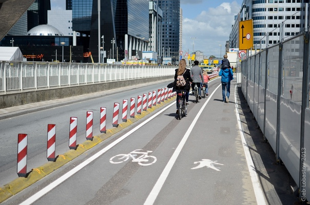

Обязанности пешеходов
Пешеходы должны двигаться по тротуарам или пешеходным дорожкам, а при их отсутствии - по обочинам.
Пешеходы, перевозящие или переносящие громоздкие предметы, а также лица, передвигающиеся в инвалидных колясках без двигателя, могут двигаться по краю проезжей части (на дорогах с разделительной полосой - по внешнему краю проезжей части), если их движение по тротуарам или обочинам создает помехи для других пешеходов.
При отсутствии тротуаров, пешеходных дорожек или обочин, а также в случае невозможности двигаться по ним пешеходы могут двигаться по велосипедной дорожке или идти в один ряд по краю проезжей части (на дорогах с разделительной полосой - по внешнему краю проезжей части).
Вне населенных пунктов при движении по проезжей части пешеходы должны идти навстречу движению транспортных средств.
Лица, передвигающиеся в инвалидных колясках без двигателя, ведущие мотоцикл, мопед, велосипед по краю проезжей части, должны следовать по правой стороне дороги по ходу движения транспортных средств.

Движение организованных пеших колонн по проезжей части разрешается только по направлению движения транспортных средств по правой стороне не более чем по четыре человека в ряд. Спереди и сзади колонны с левой стороны должны находиться сопровождающие с красными флажками, а в темное время суток и в условиях недостаточной видимости - с включенными фонарями: спереди - белого цвета, сзади красного.
Группы детей разрешается водить только по тротуарам и пешеходным дорожкам, а при их отсутствии - и по обочинам, но лишь в светлое время суток и только в сопровождении взрослых.

Пешеходы должны пересекать проезжую часть по пешеходным переходам, в том числе по подземным и надземным, а при их отсутствии в пределах видимости - на перекрестках по линии тротуаров или обочин.
При отсутствии в зоне видимости перехода или перекрестка разрешается пересекать дорогу под прямым углом к краю проезжей части там, где она хорошо просматривается в обе стороны. Запрещается переходить проезжую часть вне пешеходного перехода при наличии разделительной полосы в населенном пункте, а также в местах, где установлены пешеходные или дорожные ограждения.
В местах, где движение регулируется, пешеходы должны руководствоваться сигналами регулировщика или пешеходного светофора, а при его отсутствии - транспортного светофора.